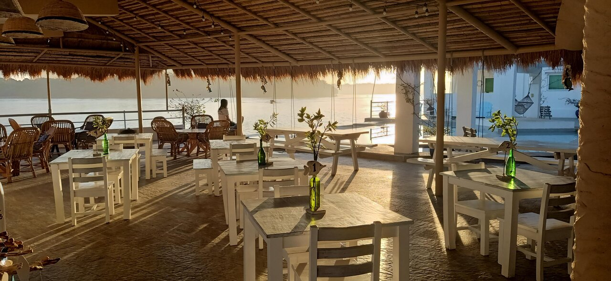

Villa Soledad Beach Resort
pin_drop393, Patar Road Brgy. Estanza, Bolinao, Luzon Philippines

Puerto Del Sol Beach Resort
pin_dropBaranggay Ilog Malino, Bolinao, Luzon 2406 Philippines

Punta Riviera Resort
pin_dropPatar Road Ilog Malino, Bolinao, Luzon 2406 Philippines

Ciao Pizzeria By The Sea
pin_dropLuciente 1 Don Efren Peralta Sundowners Vacation Villas, Bolinao, Luzon 2406 Philippines
+63 921 913 8780

Sungayan Grill
pin_dropBalingasay, Bolinao, Luzon 2406 Philippines
+63 912 353 4433

Giant Taklobo Resto Grill
pin_dropSaturnino Camangian Barangay Balingasay, Bolinao, Luzon Philippines
+63 921 463 0623
How to get there?
By Bus
From Manila, you can take a bus bound for Bolinao. Buses usually depart from either Cubao or Pasay. Popular bus companies that offer rides to Bolinao include Victory Liner, Five Star Bus, and Dagupan Bus. The travel time is approximately 5-6 hours, depending on traffic conditions.
By Car
If you prefer to drive, you can take the North Luzon Expressway (NLEX) and Subic-Clark-Tarlac Expressway (SCTEX) route. From SCTEX, take the Camiling exit and follow the signs to Bolinao. The drive will take approximately 5-6 hours, depending on traffic conditions.
Travel tips
- Gather information about Balingasay River, including its location, attractions, and activities. Plan your visit accordingly, considering factors such as weather conditions, travel time, and available facilities.
- Decide on the mode of transportation that suits your preferences and budget. Whether you choose to take a bus, drive a private vehicle, or hire a car, ensure that you have reliable transportation to and from Balingasay River.
- Pack essential items such as sunscreen, insect repellent, hats, sunglasses, and comfortable clothing suitable for outdoor activities. Don't forget to bring drinking water and snacks, as there may be limited food options available near the river.
- Prioritize safety during your visit. Observe safety guidelines, signs, and warnings provided by local authorities. Be cautious when swimming, especially if you're not a strong swimmer, and avoid taking unnecessary risks.
- Balingasay River is a natural treasure, so it's important to respect and preserve its beauty. Avoid littering and dispose of trash properly. Refrain from damaging or disturbing the flora and fauna in the area.
- Consider hiring a local guide who can provide valuable insights, ensure your safety, and enhance your experience. Local guides can share interesting information about the river, its ecosystem, and the surrounding area..
- Balingasay River offers various activities such as swimming, fishing, bird watching, and mangrove expeditions. Take the opportunity to engage in these activities and fully immerse yourself in the natural surroundings.
- Bring a camera or smartphone to capture the scenic beauty of Balingasay River. Take pictures of the river, mangroves, wildlife, and your memorable moments during the visit. .

1.Swimming

2. River Cruising
3. Boating
4. Fishing
5. Photography